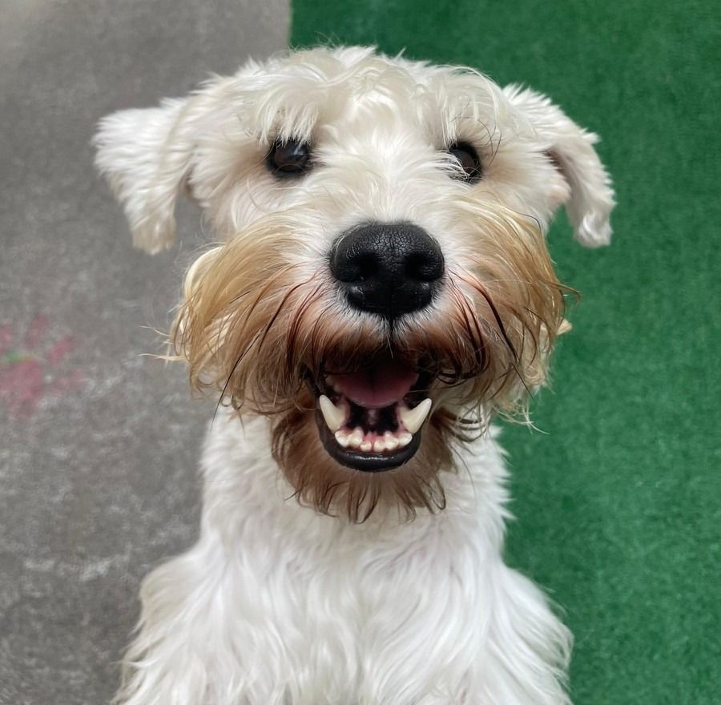

Missão
Resgatar, tratar e encaminhar para adoção responsável cães e gatos em situação de abandono.


Resgatar, tratar e encaminhar para adoção responsável cães e gatos em situação de abandono.
Ser referência em proteção animal em São Paulo, com cada animal resgatado em um lar definitivo.
Telefone: (11) 99999-9999
E-mail: ongfocinhomolhado@org.com
Fale conoscoDoe todo mês e ajude a cuidar dos animais resgatados. Contamos com você para continuar mudando vidas.
Quero doarAjude com lar temporário, doação de produtos e cuidados com quem mais precisa.
Cadastre-se